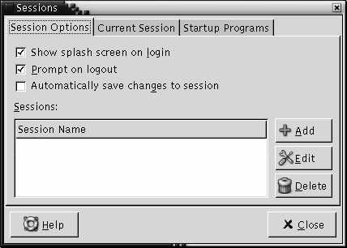
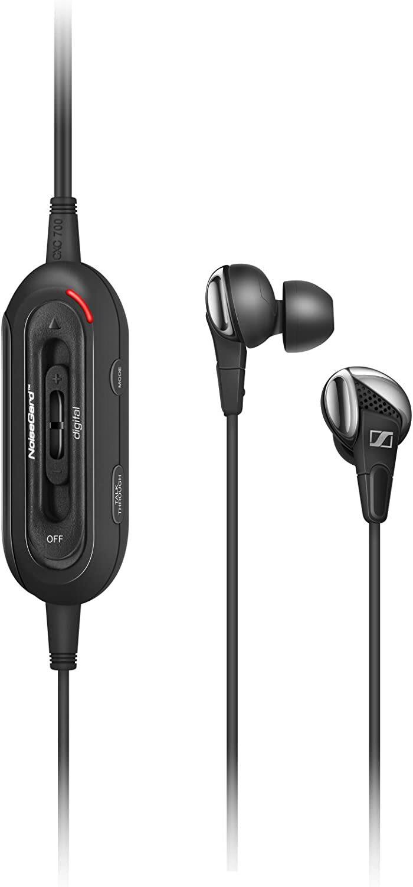

What follows is my personal list of what I’ve decided to call “Open Technical Problems”. Each of these items is a description of an open technical problem that I think would be really excellent to have solved. I believe all of these could be reasonably easy to solve if someone has the time, money, and will to do so.
If you are working on any of these ideas, of if one is solved, please let me know!
I’ll update this as often as I can remember to, and when I encounter new ideas. Each item can be clicked on to expand its contents. With that, here the list:
It would be fantastic if we could restart our Linux/GNOME laptops and get all of our open windows restored automatically to where we left them. We’d obviously want the internal application states to be preserved as much as possible. The gnome-terminal should come back with the same scrollback as before. Text editors should restore the cursor to the previous location.
|  |
| This used to sort of be possible, almost. |
This feature is not new, and it almost worked well. We need to revive it and polish it like crazy.
Sennheiser used to make some excellent noise-cancelling earphones. In particular, I enjoyed the Sennheiser CXC-700 series. The only downside was that they required a 1.5V AA battery to operate. This was needed to power the active noise cancellation feature.
|  |
| Stock photo of the Sennheiser CXC-700 headphones. |
With modern devices moving to USB-C instead of the 3.5mm TRS jack found on these earphones, I think it’s an excellent opportunity to take advantage of the power that USB-C provides and make a wired, battery-free version of these. No, I don’t want any of the wireless versions, thank you!
This has been requested since at least 2005. There are extensions, but I initially had some trouble getting them working, and also migrating over all my currently stored passwords, and I haven’t tried again recently. The bigger surprise to me is why Mozilla doesn’t focus on this kind of direct, user-impacting polish, rather than all sorts of other enterprises that most folks don’t really care about.
There is an extension, but it might need a bit more polish to make it completely usable for most users.
It’s not entirely clear how to easily have a redundant /boot and /boot/efi/ on more than one disk, so that if either dies, you can keep booting normally. It’s well-known how to setup software RAID 1 across multiple devices with mdadm for your root partition, but this logic doesn’t easily extend to the boot partitions. In particular, when running kernel updates, these partitions need to be kept current with any changes that happen there. Whether the two get manually synchronized somehow, or whether an actual mdadm manages both of them, I’d love to see this plumbed through anaconda, Fedora, and the entire distribution stack.
Your comment has been submitted and will be published if it gets approved.
Click here to see the patch you generated.
{kind=link}
{kind=link}
Comments
Nothing yet.
Post a comment